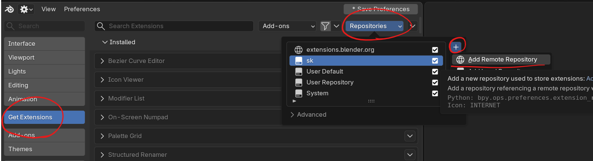

インストール¶
PME 2.1以降は、Extensionとしてインストールします。 PME 2.0までのLegacy Add-onとPME 2.1 Extensionは、同時に有効化しないでください。
対応バージョン¶
PME 2.1は、Blender 4.5から5.2までに対応しています。
PME 2.0以前の手順は、Legacy Add-on向けのアーカイブを参照してください。
1. アクセス情報を取得
Gumroadのライセンスキーを用意し、 PMEセットアップページを開きます。 購入確認後、保存先が異なる3つの値が表示されます。
セットアップページの値 |
入力先・保存先 |
|---|---|
1. Repository URL |
BlenderのURL |
2. Repository access token — Secret |
BlenderのSecret |
3. Recovery secret — Secret |
パスワードマネージャーなど、Blenderの外部。Update Accessの延長やRepository accessの再発行に必要 |
重要
Finish setupを押す前に、Repository access tokenと Recovery secretを保存してください。この2つのSecretは、確認後に再表示されません。 他人に共有しないでください。
保存前にページを閉じた場合は、同じブラウザでセットアップページを開き、同じ購入キーで 再試行してください。未完了のセットアップを復元できず、Recovery secretも保存していない場合は、 サポートへ連絡してください。
現在、セットアップページはGumroadで購入したライセンスに対応しています。 Lemon Squeezyへの対応は準備中です。
2. Repositoryを追加
Blenderを起動し、Edit > Preferences > Get Extensionsを開きます。
Allow Online Accessが表示された場合は、押してOnline Accessを許可します。
画面右上のRepositoriesメニューを開き、+ > Add Remote Repositoryを選びます。
{kind=link}

Preferences > Get Extensions > Repositories > + > Add Remote Repository¶
次のRepository URLをURLへ貼り付けます。
https://extensions.pie-menu-editor.com/v1/index.json
Requires Access Tokenを有効にします。
Repository access tokenをSecretへ貼り付け、 Createを押します。

Repository URLとRepository access tokenの入力先¶
重要
Repository URLだけではアクセスできません。 Secretへ入力するのはRepository access tokenです。 Recovery secretや購入キーは入力しません。
3. PMEをインストール
Get Extensionsへ戻り、追加したPME Repositoryを同期します。 一覧が更新されない場合は、Refresh Remoteを実行してください。
Pie Menu Editor Forkを検索し、Installを押します。
PMEが無効の場合は、Preferences > Add-onsで有効にします。
PME 1.18.x、1.19.x、2.0.5.xからPME 2.1へ移行する手順です。
1. 旧版をバックアップして終了
重要
PME 1.18.x / 1.19.xを使用している場合は、先にユーザーリソースをバックアップしてください。
PME 1では、スクリプトやアイコンなどが旧アドオンの内部または隣接フォルダに保存されています。 旧版をアンインストールする前に、使用しているファイルを別の安全な場所へコピーしてください。
バックアップする場所
使用しているBlenderバージョンの標準addonsフォルダを開きます。
<version>は4.2などのBlenderバージョン番号です。
OS |
|
|---|---|
Windows |
|
macOS |
|
Linux |
|
その中にある次のフォルダを、PMEをアンインストールしても削除されない場所へコピーします。
リソース |
|
|---|---|
カスタムスクリプト |
|
カスタムアイコン |
|
バックアップ |
|
無効化したメニューの状態も引き継ぐ場合は、PME 1.19.0以降でJSONを書き出してください。 それ以前のPME 1では、無効状態がJSONに含まれません。
PME 2.0.5.xのユーザーリソースは、アドオン本体とは別の ユーザーリソースフォルダに保存されています。 2.0.0以降では旧版をアンインストールしても削除されません。
旧版PMEのPreferencesを開き、Export > All Menusで メニューをJSONファイルへ書き出します。
Preferences > Add-onsから旧版PMEをアンインストールします。
Blenderを終了します。
2. アクセス情報を取得
Gumroadのライセンスキーを用意し、 PMEセットアップページを開きます。 購入確認後、保存先が異なる3つの値が表示されます。
セットアップページの値 |
入力先・保存先 |
|---|---|
1. Repository URL |
BlenderのURL |
2. Repository access token — Secret |
BlenderのSecret |
3. Recovery secret — Secret |
パスワードマネージャーなど、Blenderの外部。Update Accessの延長やRepository accessの再発行に必要 |
重要
Finish setupを押す前に、Repository access tokenと Recovery secretを保存してください。この2つのSecretは、確認後に再表示されません。 他人に共有しないでください。
保存前にページを閉じた場合は、同じブラウザでセットアップページを開き、同じ購入キーで 再試行してください。未完了のセットアップを復元できず、Recovery secretも保存していない場合は、 サポートへ連絡してください。
現在、セットアップページはGumroadで購入したライセンスに対応しています。 Lemon Squeezyへの対応は準備中です。
3. Repositoryを追加
Blenderを起動し、Edit > Preferences > Get Extensionsを開きます。
Allow Online Accessが表示された場合は、押してOnline Accessを許可します。
画面右上のRepositoriesメニューを開き、+ > Add Remote Repositoryを選びます。
Preferences > Get Extensions > Repositories > + > Add Remote Repository¶
次のRepository URLをURLへ貼り付けます。
https://extensions.pie-menu-editor.com/v1/index.json
Requires Access Tokenを有効にします。
Repository access tokenをSecretへ貼り付け、 Createを押します。
Repository URLとRepository access tokenの入力先¶
重要
Repository URLだけではアクセスできません。 Secretへ入力するのはRepository access tokenです。 Recovery secretや購入キーは入力しません。
4. PMEをインストールして設定をImport
Get Extensionsへ戻り、追加したPME Repositoryを同期します。 一覧が更新されない場合は、Refresh Remoteを実行してください。
Pie Menu Editor Forkを検索し、Installを押します。
PMEが無効の場合は、Preferences > Add-onsで有効にします。
PME 1から移行する場合は、退避したカスタムスクリプトを ユーザーリソースフォルダの
scripts/へ、 カスタムアイコンをicons/へコピーします。 旧版のシステムファイルでPME 2.1のファイルを上書きしないでください。PME 2.1のImport Menusを開き、保存したJSONファイルを Rename if existsで読み込みます。
compatible JSONは一部の情報を省略するため、PME 2.1への移行には使用しません。
JSONから読み込まれる設定
PMEメニュー
PMEメニューに設定したHotkey
PME 2.1で設定し直す項目
PMEの一般設定
PME全体を開くためのGlobal Hotkey
User Propertiesに保存された現在値
ユーザーリソースフォルダの変更設定
boot_configとimport pmeの有効化設定
PME RepositoryからインストールしたPMEは、BlenderのExtensions機能でアップデートします。
Edit > Preferences > Get Extensionsを開きます。
必要に応じてRefresh Remoteを実行します。
Install Available Updatesを実行します。
PMEの表示バージョンが更新されたことを確認します。
作業中のファイルを保存し、Blenderを再起動します。
重要
アップデート後は、PMEを使い続ける前に必ずBlenderを再起動してください。
Extensionのファイルが更新されても、同じBlenderセッション内に更新前のPMEの状態が 残る場合があります。アップデート直後のセッションでPMEを使い続ける手順はサポートされません。
Q&A¶
- 旧版PMEが残っているというエラーが表示される
旧版PMEをアンインストールし、Blenderを再起動してからPME 2.1を有効化してください。
- 再起動後も表示やHotkeyがおかしい
Preferences > Add-onsで旧版PMEが残っていないか確認してください。 残っている場合はアンインストールしてBlenderを再起動します。 解決しない場合は、下記の案内に従ってエラーメッセージを報告してください。
- Importしたメニューが再起動後に消えた
Auto-Save Preferencesが無効になっていないか確認してください。 無効の場合は、Import後にSave Preferencesを実行します。
- エラーメッセージまたは
See System Consoleと表示された 表示されたメッセージとSystem Consoleの出力を添えて、 サポートページから報告してください。 WindowsではWindow > Toggle System ConsoleでSystem Consoleを開けます。